← 回條目清單
第 1 張：標題
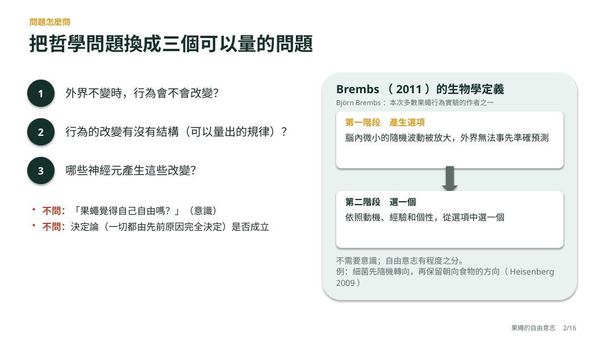
第 2 張：把哲學問題換成三個可以量的問題
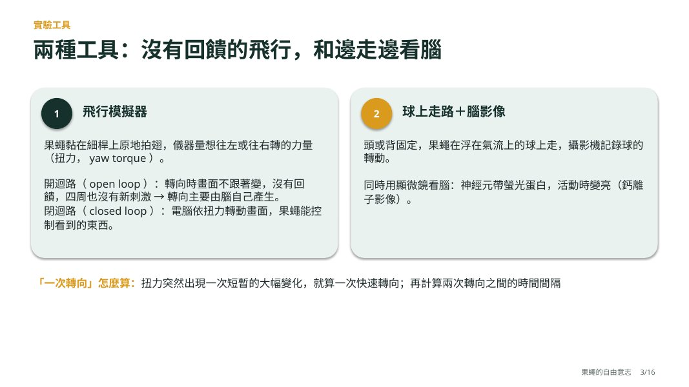
第 3 張：兩種實驗工具
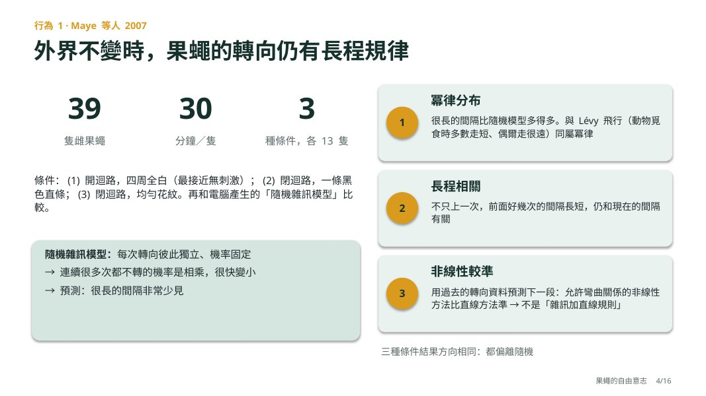
第 4 張：外界不變時，果蠅的轉向仍有長程規律（Maye 等人，2007）
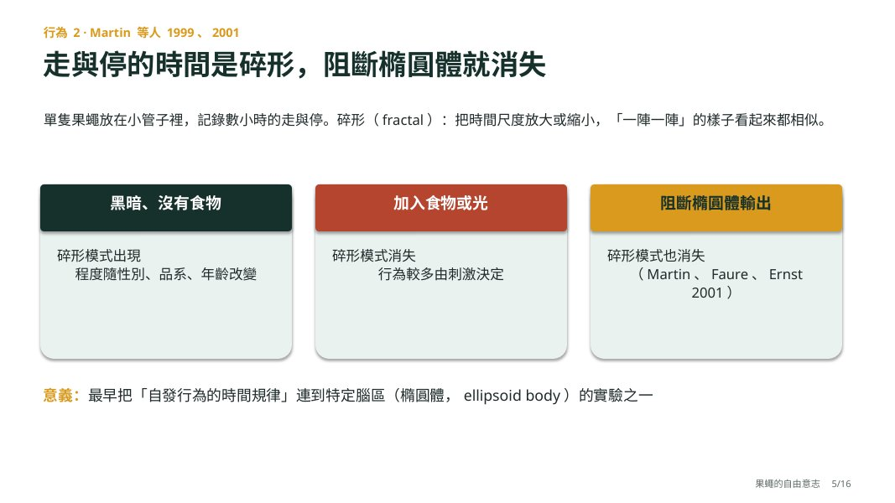
第 5 張：走與停的時間是碎形，阻斷橢圓體就消失（Martin 等人，1999、2001）
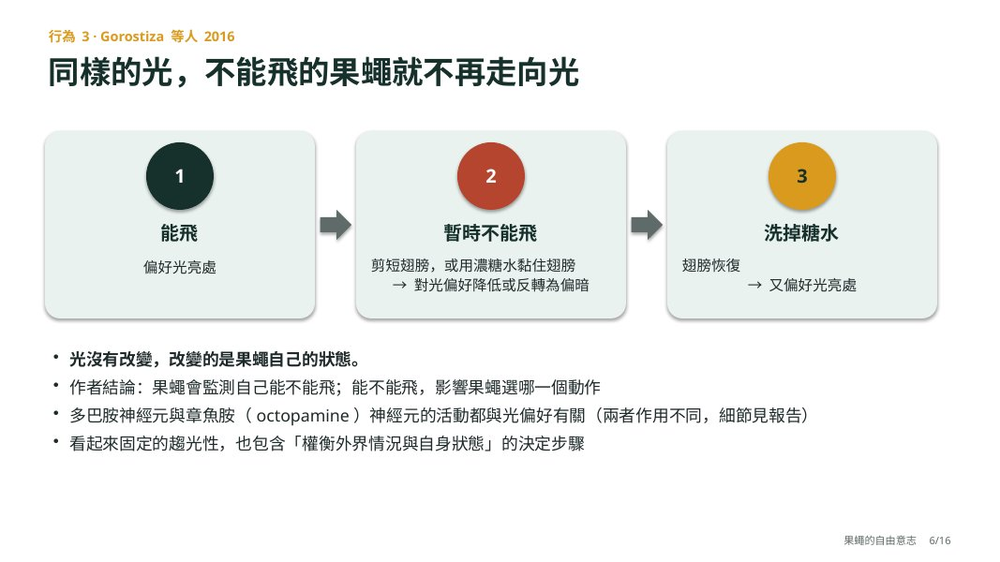
第 6 張：不能飛的果蠅不再走向光（Gorostiza 等人，2016）
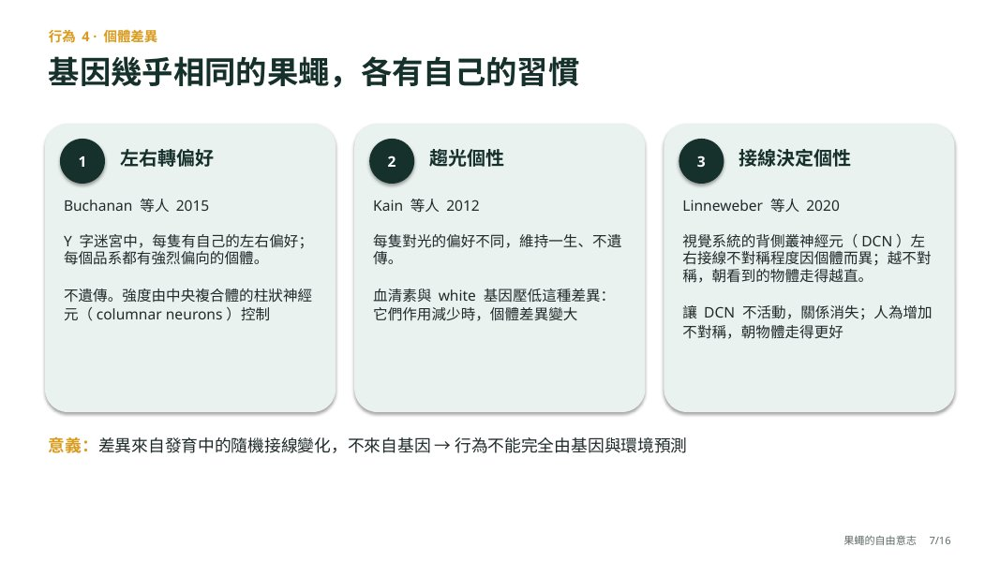
第 7 張：基因幾乎相同的果蠅，各有自己的習慣
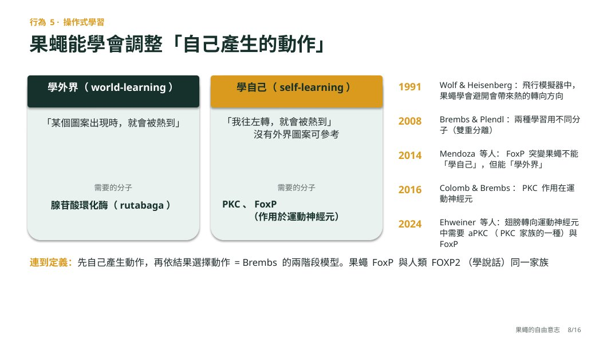
第 8 張：果蠅能學會調整自己產生的動作
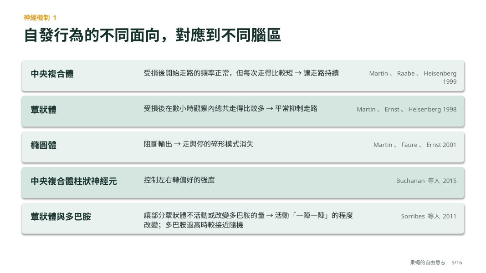
第 9 張：自發行為的不同面向，對應到不同腦區
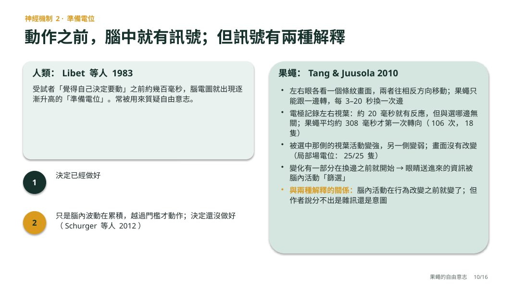
第 10 張：動作之前腦中就有訊號，但訊號有兩種解釋
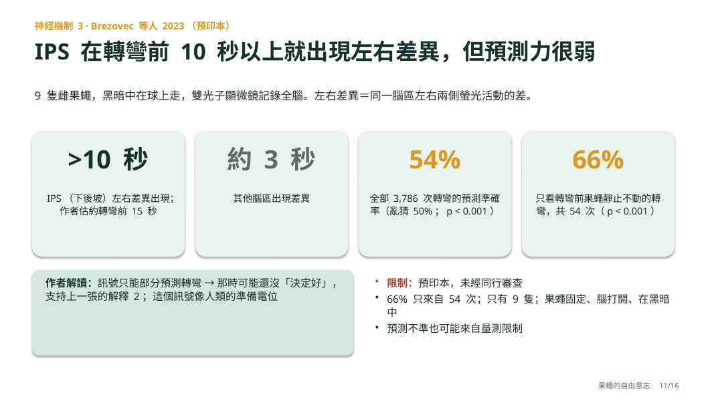
第 11 張：IPS 在轉彎前 10 秒以上出現左右差異，但預測力很弱（Brezovec 等人，2023，預印本）
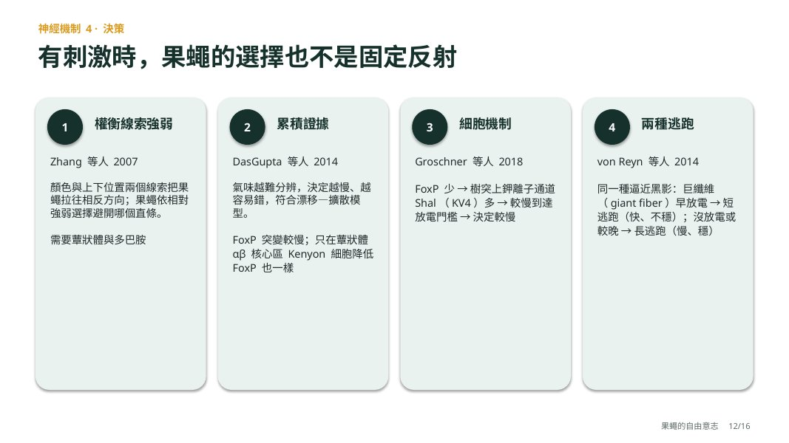
第 12 張：有刺激時，果蠅的選擇也不是固定反射
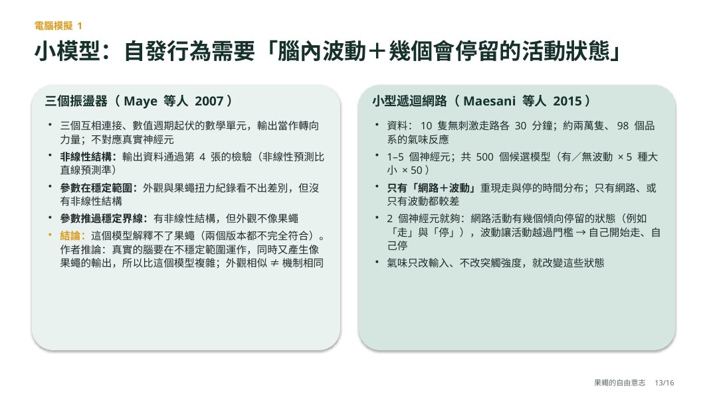
第 13 張：小模型：自發行為需要腦內波動加上幾個會停留的活動狀態
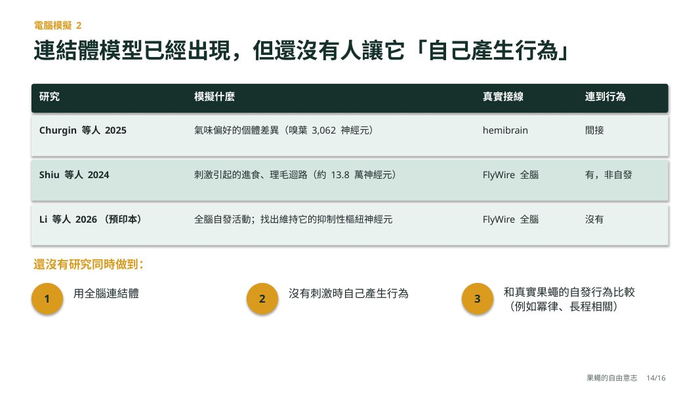
第 14 張：連結體模型已經出現，但還沒有人讓它自己產生行為
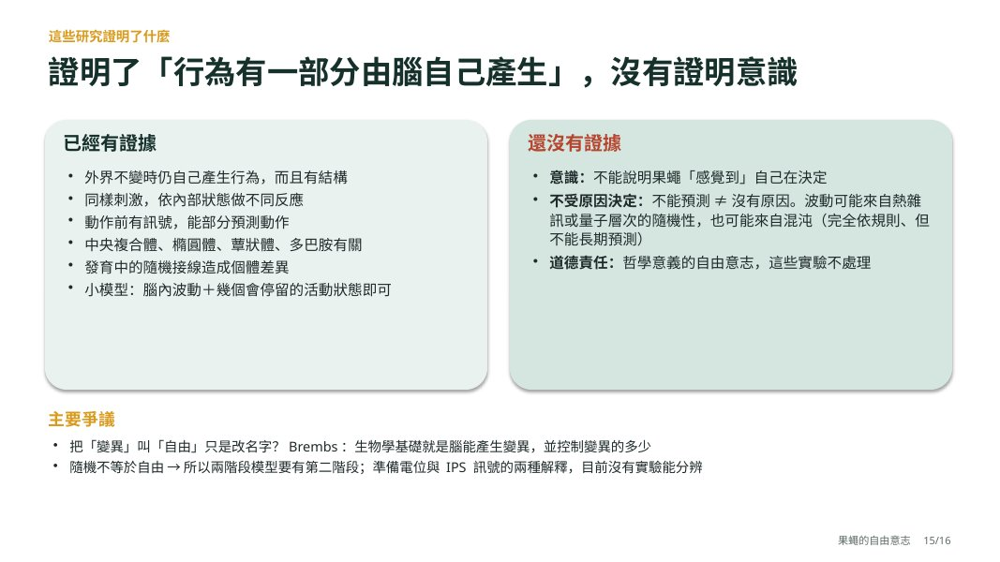
第 15 張：證明了什麼、沒有證明什麼
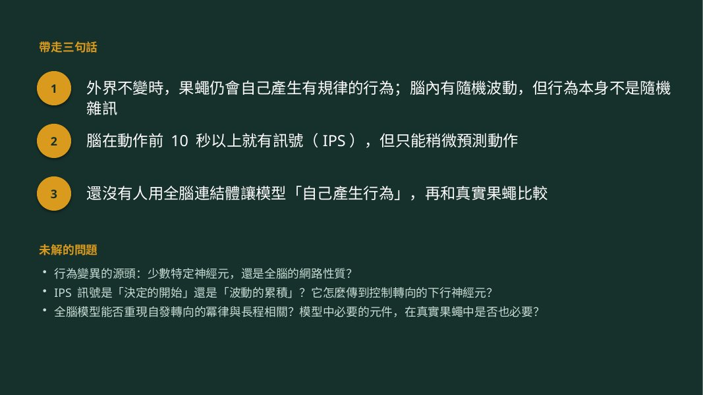
第 16 張：帶走三句話與未解問題
這是什麼
一份 16 張的簡報，整理「果蠅有沒有自由意志」這個問題的實驗與電腦模擬研究。研究者不能問果蠅「你是不是自己決定的」，所以改問一個可以量的問題：外界條件完全不變時，果蠅的行為是否仍會改變？這些改變是隨機雜訊，還是由腦自己產生、有規律的活動？上面是每張投影片的圖。
下載
結論
- 果蠅在外界不變時，仍然自己產生行為。研究者把果蠅黏在細桿上、在原地拍翅，四周全白、沒有任何圖案，量果蠅想往左或往右轉的力量。這些行為有規律，不是單純的隨機雜訊。例如：研究者計算兩次轉向之間的時間間隔。如果轉向是隨機雜訊，每一次轉向彼此獨立，很長的間隔會非常少。實際上，現在的間隔與前面好幾次的間隔有關，而且很長的間隔比隨機雜訊預測的多。
- 同樣的刺激，果蠅依照自己的狀態做不同的反應。例如：一般的果蠅走路時會走向光。研究者剪短翅膀、或用糖水把翅膀黏住，讓果蠅暫時不能飛。這時果蠅不再偏好光，甚至走向暗處；洗掉糖水、翅膀恢復以後，又走向光。光沒有改變，改變的是果蠅自己能不能飛。
- 腦中有訊號在動作之前出現。一個預印本研究（尚未經過同行審查的論文，結果還不確定）發現：腦的一個區域（下後坡，IPS，靠近腦後方、與控制動作有關）左右兩側的活動，在轉彎前 10 秒以上就開始不同。但這個訊號只能稍微預測轉彎方向：亂猜的準確率是 50%，用這個訊號最多猜對 66%。所以訊號出現得早，但很弱。
- 電腦模擬方面，研究者用 1 到 5 個神經元的小型神經網路，重現果蠅走與停的時間規律：走和停的時間有短有長，分布和真實果蠅相同。網路必須加入腦內的隨機起伏才做得到。這和第 1 點不矛盾：第 1 點說的是行為本身不是隨機雜訊；這裡的隨機起伏在腦內，網路把這些起伏轉成有規律的行為。用全腦連結體（全腦神經元與突觸的完整地圖）建的模型已經出現，但還沒有人讓它在沒有刺激時自己產生行為。
沒有證明的事
這些研究沒有證明果蠅有意識，也沒有證明果蠅的行為「不受任何原因決定」。它們只證明：果蠅行為的原因有一部分在腦內，不完全由外界刺激決定。簡報採用的「自由意志」是生物學家 Brembs 的定義：動物能自己產生不同的行為選項，並從中選一個；這個定義不要求意識。
條目編號 20261121-fly-freewill。產生這一頁的程式：make.py。
刪除這個條目 會開一個 GitHub 頁面，按綠色的送出鈕（Create）就會刪除，約一兩分鐘後網站更新。